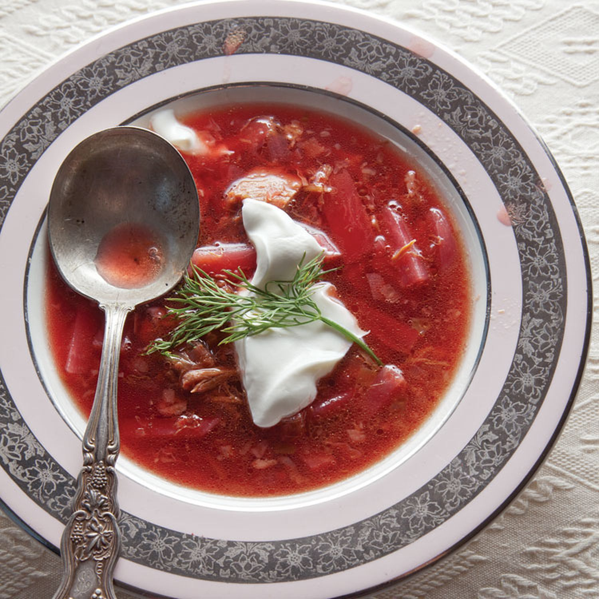

Odin Recipes
Borscht

Description
Borscht is a sour soup commonly made using beet root
Ingredients
- 8 cups chicken broth
- 3 beets
- 2 cups water
- 3 potatoes
- 2 carrots
- 1 cup of beans
- 2 bay leaves
- salt to taste
Steps
- Peel, chop, and slice vegetables
- Boil broth and water in a large pot
- Once potatoes soften, add beans, bay leaves, and salt
- Simmer for 3 min and serve